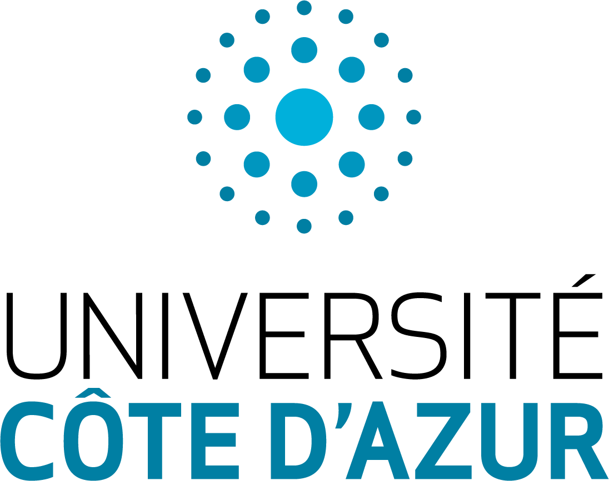
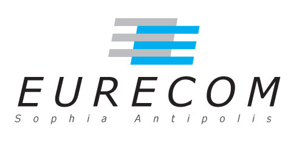

Challenge
The demand for data-driven decision making coupled with need to retain data to meet regulatory compliance requirements has resulted in a rapid increase in the amount of archival data stored by enterprises. As data generation rate far outpaces the rate of improvement in storage density of media like HDD and tape, researchers have started investigating new architectures and media types that can store such “cold”, infrequently accessed data at very low cost.
Synthetic DNA
Synthetic DNA is one such storage media that has received some attention recently due to its high density and durability. DNA possesses three key properties that make it relevant for archival storage. First, it is an extremely dense threedimensional storage medium that has the theoretical ability to store 455 Exabytes in 1 gram; in contrast, a 3.5” HDD can store 10TB and weighs 600 grams today. Second, DNA can last several centuries even in harsh storage environments; HDD and tape have life times of five and thirty years. Third, it is very easy, quick, and cheap to perform in-vitro replication of DNA; tape and HDD have bandwidth limitations that result in hours or days for copying large EB-sized archives.
Research Results
In this project, we investigate the problem of integrating DNA in the enterprise storage hierarchy. In our initial work, we investigate the problem of integrating DNA in the database storage hierarchy. More specifically, we ask the following two questions: (i) how can database knowledge help optimize DNA encoding and decoding? and (ii) how can biochemical mechanisms used for DNA manipulation be used to perform in-vitro, near-data SQL query processing?
In answering these questions, we present OligoArchive, an architecture for using DNA-based storage system as the archival tier of a relational database. We demonstrate that OligoArchive can be realized in practice by building archiving and recovery tools (pg_oligo_dump and pg_oligo_restore) for PostgreSQL that perform schema-aware encoding and decoding of relational data on DNA, and using these tools to archive a 12KB TPC-H database to DNA, perform in-vitro computation, and restore it back again.
Our initial results are summarised in the paper available here.
Explainer Videos
 |
Partners
|  |  |
 |  |
|||||
| Sachin Chalapati |
IPMC - Pascal Barbry |
Raja Appuswamy | Thomas Heinis |
|||||